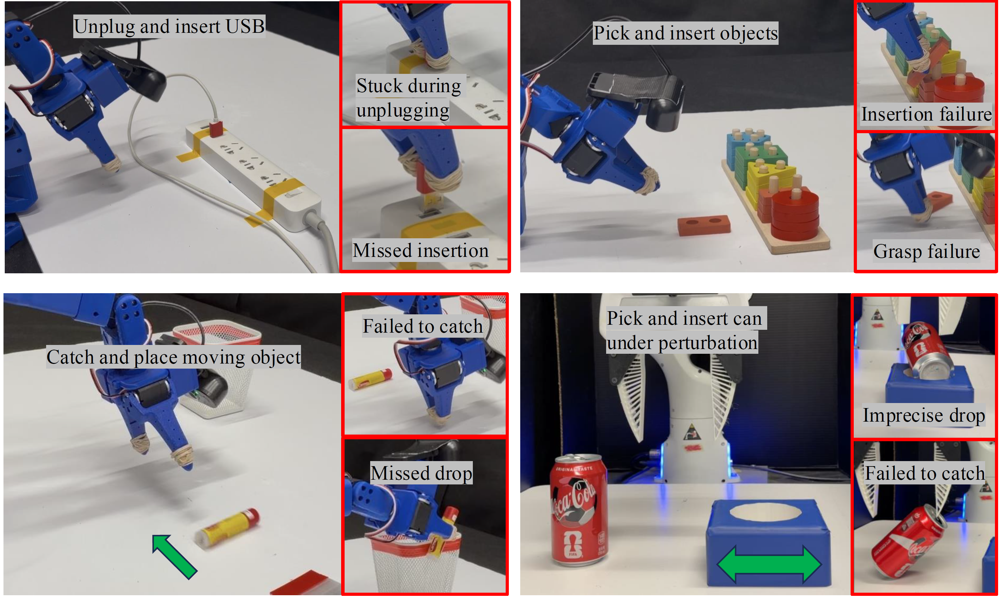
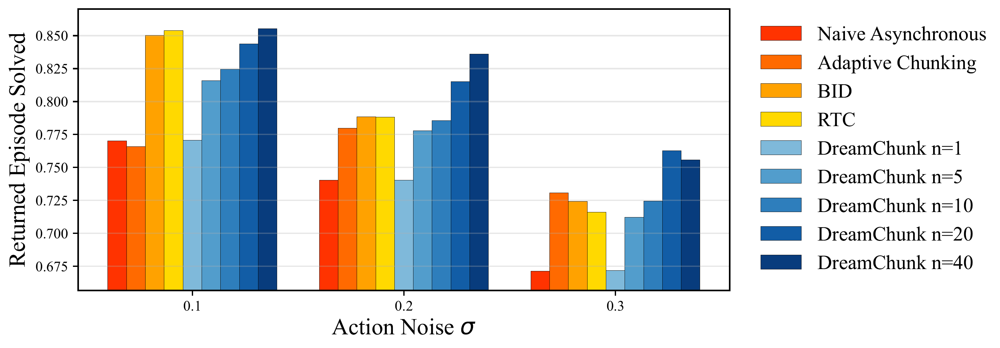
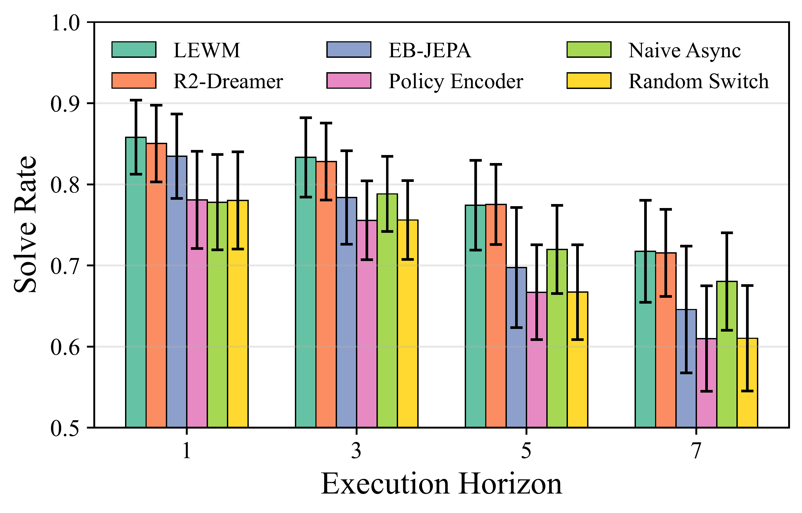

Challenges: Open-Loop Action Chunking under Stochastic Dynamics

The sources of stochasticity in manipulation: hardware imprecision from motor limitations, partial observability of object velocity or occluded scene state, and external perturbations, especially during human-robot interaction. These uncertainties make open-loop action chunking brittle.
Method Overview
Motivation
Naive open-loop action chunk execution updates its decision only at the next policy inference, making it vulnerable to external perturbations that occur within a chunk.

1. Sample candidate chunks
The fixed VLA policy samples multiple plausible future action chunks from the current observation.
2. Dream latent futures
A lightweight world model predicts the latent rollout induced by each candidate chunk.
3. Match and switch
During execution, the current observation is encoded and matched to the closest phase-aligned dreamed latent state.
Key Idea
Why open-loop chunks fail
Longer chunks reduce inference frequency and improve temporal coherence, but later actions are conditioned on increasingly outdated observations. Stochastic dynamics, execution noise, or perturbations can push the robot away from the nominal rollout before the next policy inference.
How DREAM-Chunk helps
DREAM-Chunk uses additional test-time computation to cover multiple plausible rollouts. When the realized state deviates, it selects a better aligned action from another sampled chunk, exposing local corrective behaviors already present in the policy distribution.
Robot Experiment Videos
SO-101 insert USB
SO-101 manipulates a USB connector and inserts it into the target port. DREAM-Chunk is designed to handle failures from limited motor precision, such as getting stuck or missing the port.
SO-101 grasp moving object
SO-101 grasps a moving object. As SmolVLA can not capture the velocity information with one frame observation, the task tests robustness under uncertain object velocity.
SO-101 stack toy
SO-101 picks and stacks a toy object. The task is also subject to hardware imprecision and evaluates recovery from grasp and placement errors.
Panda insert can
Panda picks a can and inserts it into a target slot while the target is perturbed by human, testing whether reactive chunk selection can compensate for execution errors and external changes.
Results Summary
DREAM-Chunk improves action-chunking policies under increasing stochasticity in the Kinetix benchmark.
Larger candidate sample sizes improve rollout coverage and performance when useful corrective behaviors exist in demonstrations.
The method improves success rates across real manipulation tasks on SO-101 and Franka platforms. World-model encoding, prediction, and latent matching remain at the millisecond level.
SO-101 with SmolVLA
USB unplug/insert: 75% open-loop → 95% DREAM-Chunk
Pick moving object: 60% open-loop → 80% DREAM-Chunk
Pick and insert toy: 35% open-loop → 45% DREAM-Chunk
Franka with π0.5
Can insertion: 10% local open-loop → 65% local DREAM-Chunk with N = 5. Under remote inference latency of 1s+, DREAM-Chunk with N = 10, 15 still outperform local baseline, achieves 30% success rate.
Kinetix Simulation Results

Performance averaged over 12 envs in Kinetix.

Ablations on different latent world models.
BibTeX
Preprint to be released soon.